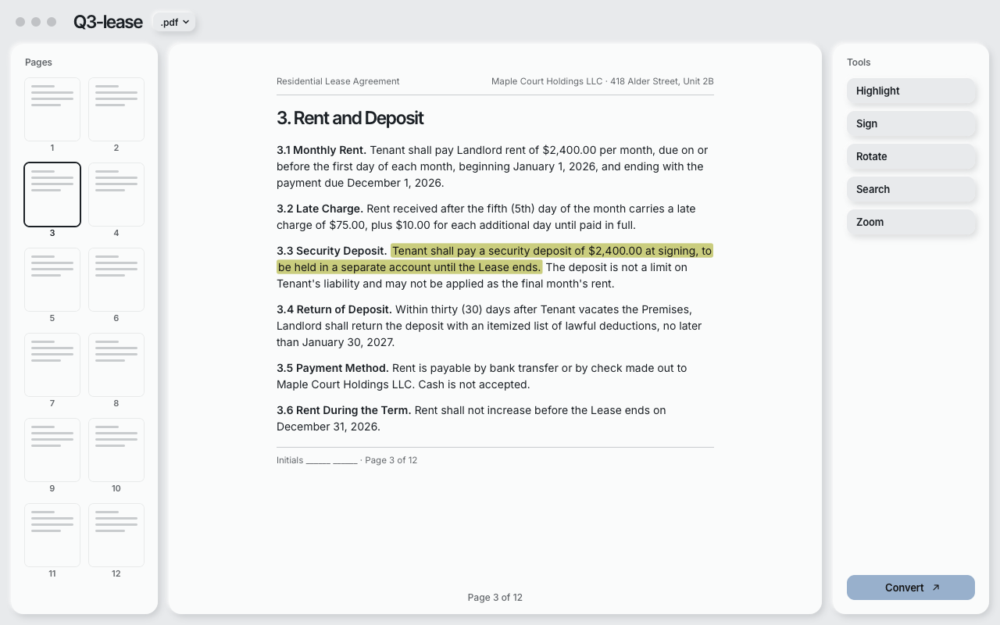
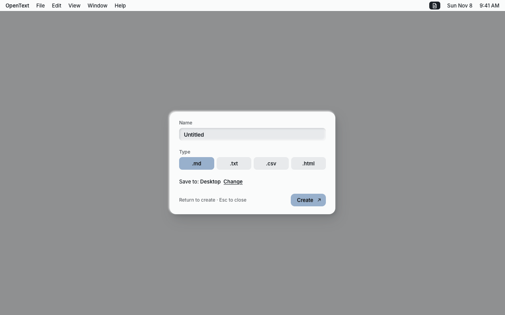
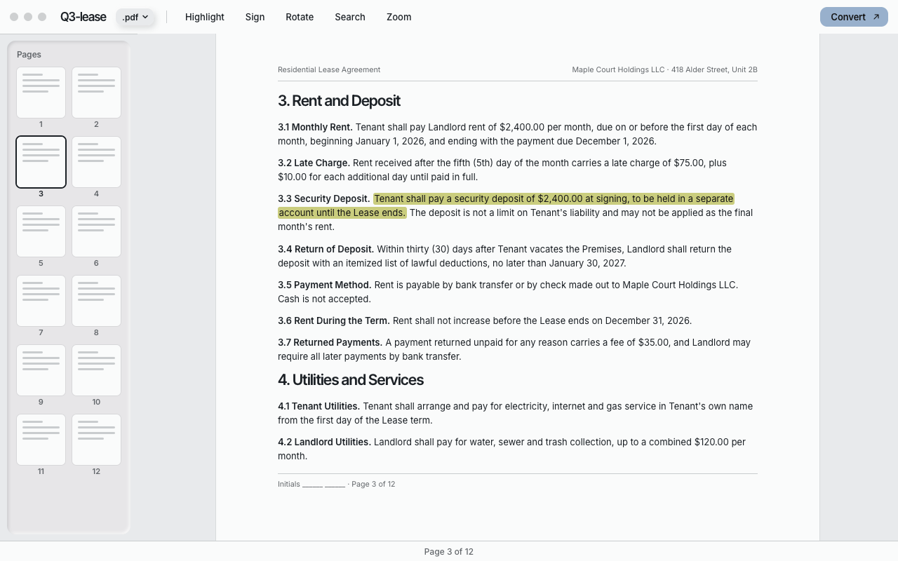
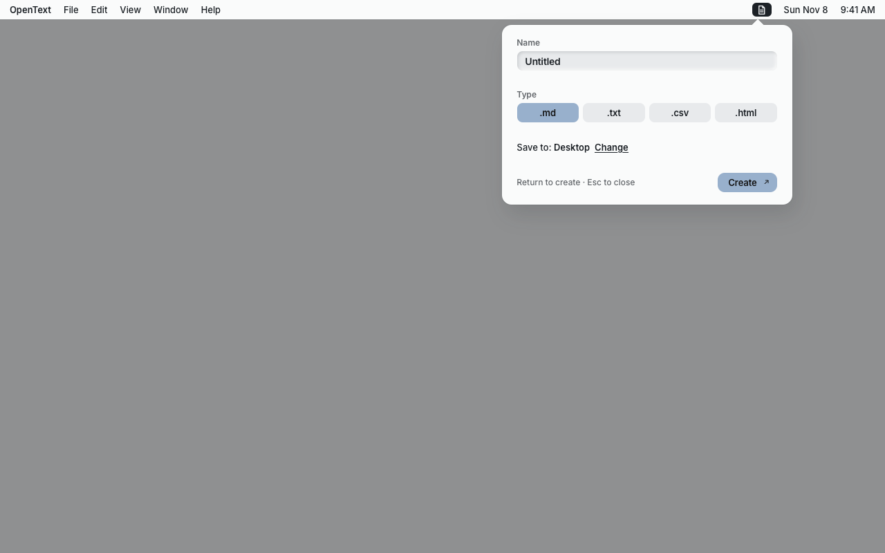
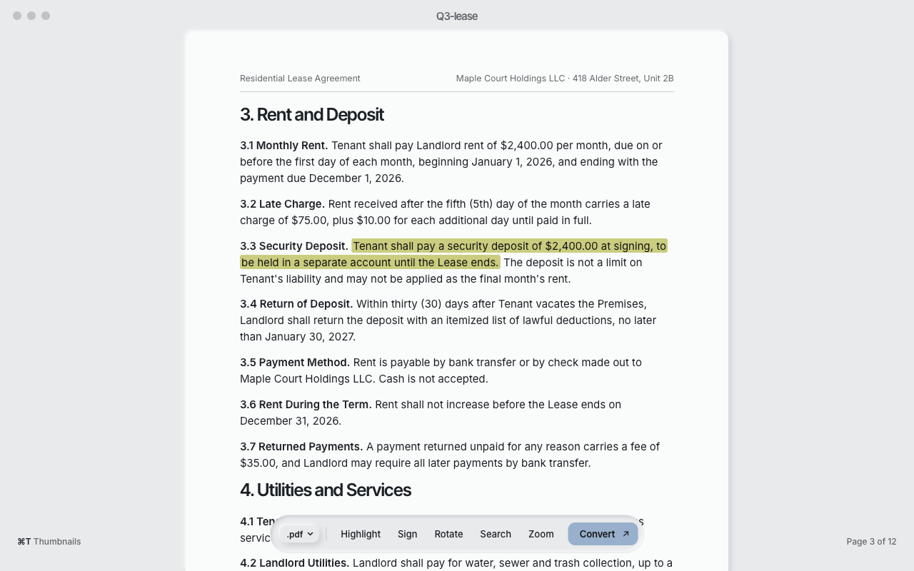
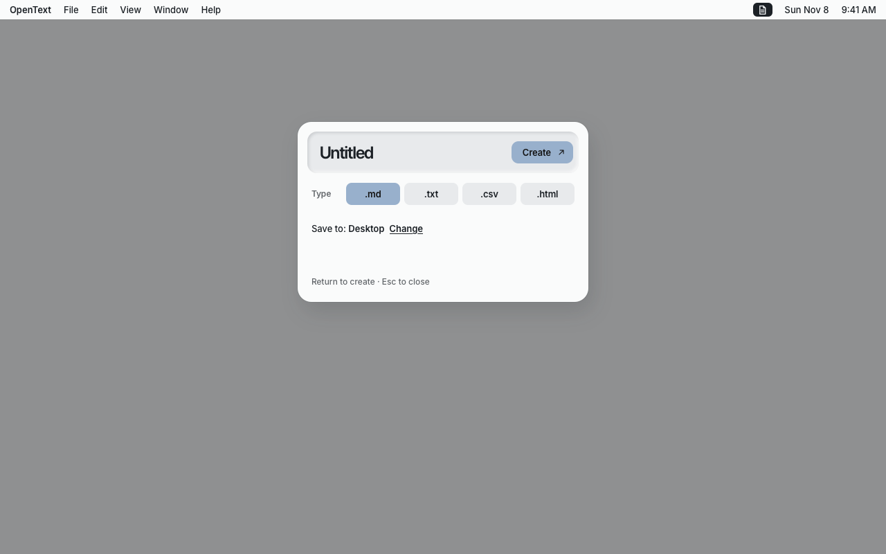

Three window layouts, same palette, type and materials. Screens at 1280 x 800; PNGs also at 1512 x 982.
Every region (pages, page, tools) sits in its own raised tile with 14px gaps; airy, most visibly the pack. Quick create is a raised tile centred on screen.


Mac-native chrome: unified toolbar, recessed sidebar well, document edge to edge; densest. Quick create drops from the menu bar item as a popover.


No sidebar at rest; the document fills the window and one floating recessed pill holds format, tools and Convert (⌘T for thumbnails). Quick create is a centred command bar.

